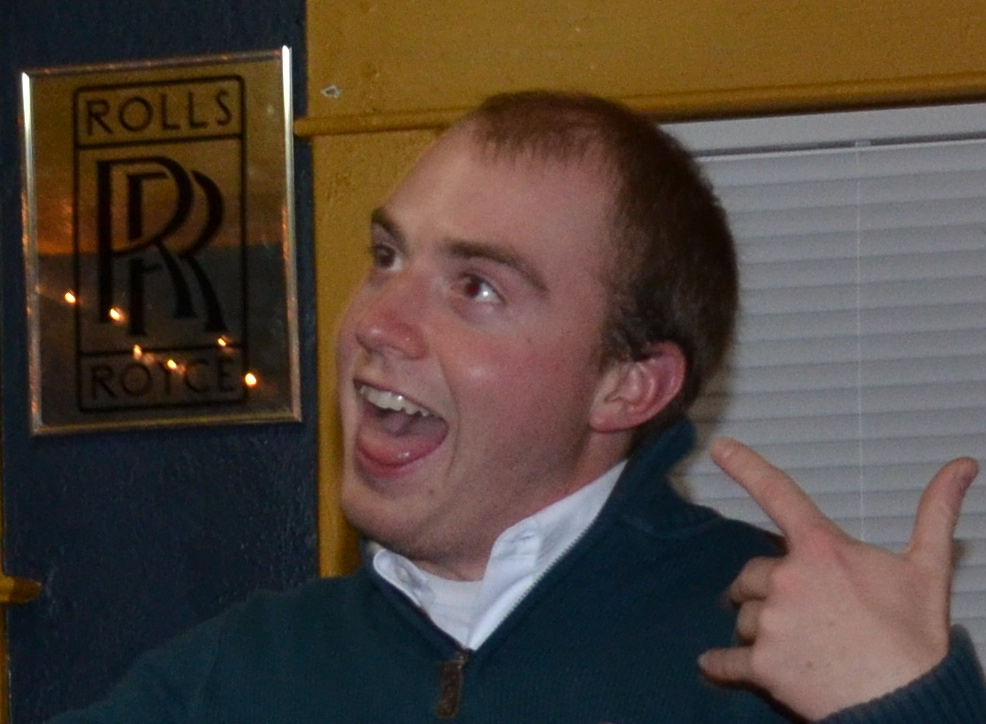

2013 - 2014 Officers
Sean Flanagan - President
Sean is a senior at The University of Notre Dame. He is studying Finance at the Mendoza College of Business with a double major in Economics. Sean has a strong background with junior and collegiate club golf. He was the captain of the St. Joseph High School golf team and was a founding member of the Notre Dame Club Team. In 2013, Sean was elected President and oversees all of the day-to-day activities and helps communicate between the NCCGA, team members, course employees, and RecSports. He is a pure ball striker and roughly a 22 handicap, but can play up to a 17 on a good day.
e-mail: clubgolf@nd.edu
Dan McCarthy - Vice President
Dan is a senior at The University of Notre Dame. He is studying Finance at the Mendoza College of Business with a double major in Computer Applications. Dan had almost no golf experience coming into college. He picked up the game just before freshman year, and is now one of the leading scorers on the team with a +1.8 handicap. In 2013, Dan assumed the role of Vice President and oversees the upcoming semester's home tournaments and team apparel.
e-mail: clubgolf@nd.edu